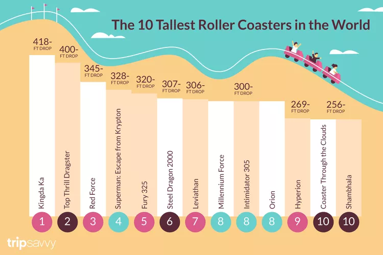

Caso 1 - Montanhas-russas
Análise das maiores quedas de montanhas-russas do mundo.
Visualização Original

Fonte: TripSavvy — Makeover Monday 2026/W01
Trabalho de Visualização de Dados
Análise das maiores quedas de montanhas-russas do mundo.

Fonte: TripSavvy — Makeover Monday 2026/W01